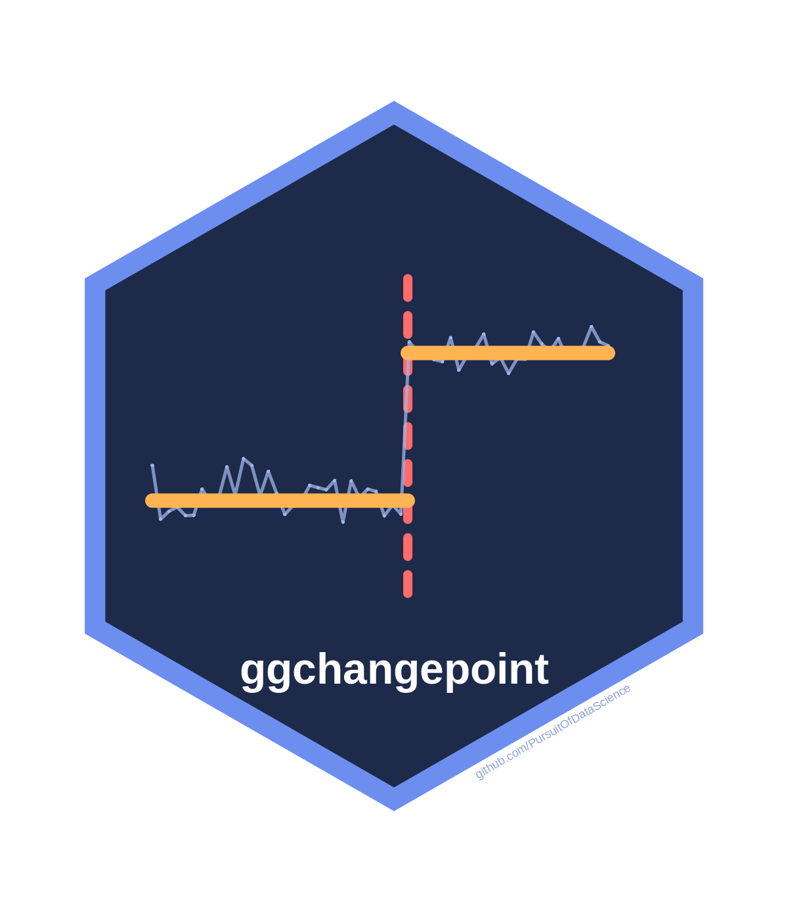
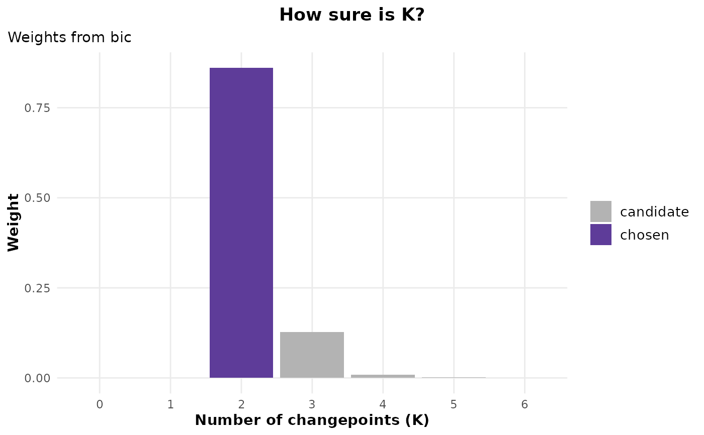

How sure is the number of changepoints? Weights over K
Source:R/k-weights.R
cpt_k_weights.RdTurns the criterion curve of cpt_select() into weights over
the candidate numbers of changepoints, and averages the candidate
segmentations under those weights into a probability, at each location,
that it is a changepoint.
Arguments
- sel
A
ggcpt_selectionfromcpt_select()withcriterion = "bic","mbic"or"aic": the criteria on the deviance scale, where weights have their meaning.- x
A
ggcpt_k_weightsobject.- ...
Ignored.
- what
"k"(default) for the weights,"locations"for the model-averaged location probabilities.- object
A
ggcpt_k_weightsobject.
Value
A ggcpt_k_weights tibble with one row per candidate:
k, value (the criterion), delta, weight
and chosen. tidy(x, what = "locations") returns the
model-averaged probability of a changepoint at each location any
candidate uses (position, index, probability);
autoplot(x) draws the weights and autoplot(x, what =
"locations") the probabilities. print() and glance()
(the chosen K, its weight, and the smallest set of K holding 95% of
the weight) work on it.
The weights
With \(\Delta_K\) the criterion of \(K\) changepoints minus the
smallest, the weight of \(K\) is \(\exp(-\Delta_K / 2)\) normalised
over the candidates. For "aic" these are Akaike weights; for
"bic" and "mbic" they approximate posterior probabilities
of each \(K\) under equal prior weight. They are conditional on the
candidate segmentations: each \(K\) is represented by the one
segmentation the ladder found for it, so the location probabilities
reflect uncertainty about how many changes there are, not about where a
given one falls (cpt_confint() answers that).
Examples
set.seed(2026)
x <- c(rnorm(80), rnorm(80, 1.2), rnorm(80, 0.4))
sel <- cpt_select(x, criterion = "bic", k_max = 6)
w <- cpt_k_weights(sel)
w
#> ggcpt_k_weights (weights over the number of changepoints, from bic)
#> Chosen: K = 2, weight 0.861
#> Largest weights: K = 2: 0.861; K = 3: 0.128; K = 4: 0.009
#> 95% of the weight: K in {2, 3}
#>
#> # A tibble: 7 × 5
#> k value delta weight chosen
#> <int> <dbl> <dbl> <dbl> <lgl>
#> 1 0 65.4 48.9 2.10e-11 FALSE
#> 2 1 31.3 14.7 5.44e- 4 FALSE
#> 3 2 16.6 0 8.61e- 1 TRUE
#> 4 3 20.4 3.81 1.28e- 1 FALSE
#> 5 4 25.6 9.06 9.29e- 3 FALSE
#> 6 5 29.4 12.9 1.38e- 3 FALSE
#> 7 6 34.5 17.9 1.12e- 4 FALSE
tidy(w, what = "locations")
#> # A tibble: 6 × 3
#> position index probability
#> <int> <int> <dbl>
#> 1 15 15 0.0108
#> 2 37 37 0.00149
#> 3 76 76 1.000
#> 4 117 117 0.139
#> 5 122 122 0.000112
#> 6 161 161 0.999
ggplot2::autoplot(w)
